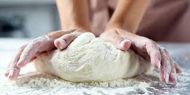
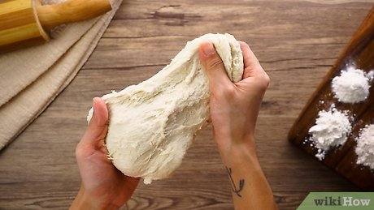

250 gr tepung terigu
1 butir telur
3 sdm margarin,lelehkan
100 ml air hangat
2 sdm susu bubuk (optional)
1/2 sdt garam
margarin leleh untuk olesan
minyak untuk merendam
1.Campur semua bahan roti jadi 1
2.Ulen sampai kalis (aku pake tangan) jangan takut jika adonan lengket ya, lumuri tangan sesekali dengan tepung (tapi jangan menambahkan tepung) uleni terus sampai adonan kalis.
3.Kalisnya adonan canai tidak sekalis dengan roti ya, kira-kira seperti ini saja sudah cukup
